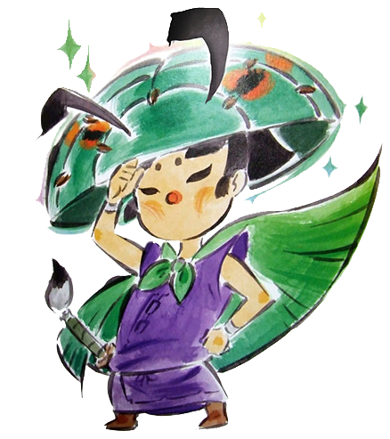

AMATERASU / 天照 is the main protagonist of Ōkami. She is also known by villagers of Kamiki Village in her past life as the dreaded Shiranui. Amaterasu is the Sun Goddess to all of Nippon and mother to Chibiterasu. Amaterasu is known for being quiet, mature, kind, and gentle always aiding those in need, but also unafraid to show her opinion. Amaterasu takes the shape of a white wolf with crimson markings across her body, a tail shaped like a calligraphy brush.
Amaterasu's overall strength for using Celestial Brush techniques. Each technique uses a certain amount of ink; if she completely runs out of ink, not only does she lose her ability to use the Celestial Brush, but her normal weapon use is also compromised.
Issun
ISSUN / 一寸 is the traveling companion of Amaterasu. He is a traveling Poncle artist who originates from Ponc'tan. Issun is inspired by the folk tale of Issun-bōshi. Poncles are a reference to a race called the Koropokkur (コロポックㇽ) or "Koro-pok-guru" from Ainu mythology. Koropokkur (literally meaning men under the butterbur) are little underground dwellers.
Issun is very talkative and comments on almost anything Amaterasu encounters. Amaterasu is mute for the duration of the game, so he often speaks for her and, thanks to his attitude, gets them both into trouble. He is reliable, intelligent and adventurous, except for when he is following a "cute babe". He is also very blunt and rude in his speech, often cutting straight to the point or openly insulting other people.